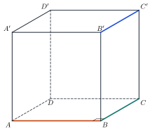
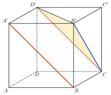
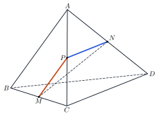

Perpendicular LinesHai đường thẳng vuông góc
Grade 11 · Topic: Perpendicularity in SpaceLớp 11 · Chủ đề: Quan hệ vuông góc trong không gian
1Lesson IntroductionGiới thiệu bài học
Learning goalsMục tiêu bài học
By the end of this lesson you can:
Sau bài học này, em có thể:
define the angle between two lines in space and recognise perpendicular lines;
nêu được định nghĩa góc giữa hai đường thẳng trong không gian và nhận biết hai đường thẳng vuông góc (trong không gian);
compute that angle by translating one line to meet the other;
tính góc đó bằng cách dựng đường thẳng song song để đưa về hai đường cắt nhau;
prove that two lines are perpendicular in cubes, pyramids and tetrahedra;
chứng minh hai đường thẳng vuông góc trong hình lập phương, hình chóp, tứ diện;
use right angles of real structures (beams, frames, rooms).
nhận ra và vận dụng góc vuông trong các kết cấu thực tế (dầm, khung, phòng).
2Mathematical VocabularyTừ vựng Toán học
angle between two lines in space – the angle between two intersecting lines through any point \(O\), parallel to the given lines; from \(0^\circ\) to \(90^\circ\).
góc giữa hai đường thẳng trong không gian – góc giữa hai đường thẳng cùng đi qua một điểm \(O\) và lần lượt song song (hoặc trùng) với hai đường thẳng đã cho; từ \(0^\circ\) đến \(90^\circ\).
perpendicular lines (in space) – two lines whose angle is \(90^\circ\); they may not intersect.
hai đường thẳng vuông góc (trong không gian) – hai đường thẳng tạo với nhau góc \(90^\circ\); chúng có thể không cắt nhau.
3Useful English PhrasesCụm từ tiếng Anh thường gặp
The two lines are perpendicular although they do not meet.
Hai đường thẳng vuông góc dù không cắt nhau.
Draw a line through \(B\) parallel to \(CD\).
Qua \(B\) kẻ đường thẳng song song với \(CD\).
The angle between the lines is sixty degrees.
Góc giữa hai đường thẳng bằng 60°.
The triangle is equilateral.
Tam giác đó là tam giác đều.
An angle between two lines is never obtuse.
Góc giữa hai đường thẳng không bao giờ là góc tù.
4Prerequisite ReviewÔn tập kiến thức nền
From Bài 11: two lines in space can intersect, be parallel, coincide or be skew. Plane geometry: the angle between two intersecting lines is the smaller of the angles they form (\(\le90^\circ\)).
Từ Bài 11: hai đường thẳng trong không gian có thể cắt nhau, song song, trùng nhau hoặc chéo nhau. Hình học phẳng: góc giữa hai đường thẳng cắt nhau là góc nhỏ hơn trong các góc chúng tạo thành (\(\le90^\circ\)).
5TheoryLý thuyết
5.1 The angle between two lines in spaceGóc giữa hai đường thẳng trong không gian
DefinitionĐịnh nghĩa
The angle between \(a\) and \(b\), written \((a,b)\), is the angle between two lines \(a'\), \(b'\) through one point \(O\) with \(a'\parallel a\) (or \(a'\equiv a\)) and \(b'\parallel b\) (or \(b'\equiv b\)). It does not depend on \(O\).
Góc giữa hai đường thẳng \(a\) và \(b\), kí hiệu \((a,b)\), là góc giữa hai đường thẳng \(a'\), \(b'\) cùng đi qua một điểm \(O\) và lần lượt song song (hoặc trùng) với \(a\), \(b\). Góc này không phụ thuộc vào cách chọn \(O\).
\(0^\circ\le(a,b)\le90^\circ\); parallel or coincident lines make \(0^\circ\).
\(0^\circ\le(a,b)\le90^\circ\); hai đường thẳng song song hoặc trùng nhau tạo góc \(0^\circ\).
In practice choose \(O\) on one of the lines and draw through it a parallel to the other line; then solve a triangle.
Thực hành: chọn \(O\) nằm trên một trong hai đường thẳng, qua \(O\) kẻ đường song song với đường còn lại, rồi giải tam giác.
5.2 Perpendicular linesHai đường thẳng vuông góc
Definition and propertiesĐịnh nghĩa và tính chất
\(a\perp b\iff(a,b)=90^\circ\). Perpendicular lines in space may intersect or be skew.
\(a\perp b\iff(a,b)=90^\circ\). Hai đường thẳng vuông góc trong không gian có thể cắt nhau hoặc chéo nhau.
If \(a\parallel b\) and \(c\perp a\) then \(c\perp b\).
Nếu \(a\parallel b\) và \(c\perp a\) thì \(c\perp b\).
Unlike in the plane, two lines perpendicular to a third line need not be parallel (the three edges at a corner of a cube).
Khác với trong mặt phẳng, hai đường thẳng cùng vuông góc với một đường thẳng thứ ba chưa chắc song song (ba cạnh xuất phát từ một đỉnh hình lập phương).

Watch out!Lưu ý
If the triangle you build has an obtuse angle \(\alpha\), the angle between the lines is \(180^\circ-\alpha\).
Nếu tam giác dựng được có góc tù \(\alpha\) thì góc giữa hai đường thẳng là \(180^\circ-\alpha\).
6Worked ExamplesVí dụ có lời giải
ExampleVí dụ 1BasicCơ bản – Angles in a cubeGóc trong hình lập phương
In the cube \(ABCD.A'B'C'D'\), find \((AB,C'D')\), \((AB,B'C')\) and \((AC,A'D')\).
Cho hình lập phương \(ABCD.A'B'C'D'\). Tính \((AB,C'D')\), \((AB,B'C')\) và \((AC,A'D')\).
Analysis: Replace the second line by a parallel line through a point of the first.
Phân tích: Thay đường thứ hai bằng đường song song đi qua một điểm của đường thứ nhất.
\(C'D'\parallel CD\parallel AB\): \((AB,C'D')=0^\circ\).
\(C'D'\parallel CD\parallel AB\): \((AB,C'D')=0^\circ\).
\(B'C'\parallel BC\): \((AB,B'C')=\widehat{ABC}=90^\circ\).
\(B'C'\parallel BC\): \((AB,B'C')=\widehat{ABC}=90^\circ\).
\(A'D'\parallel AD\): \((AC,A'D')=\widehat{CAD}=45^\circ\).
\(A'D'\parallel AD\): \((AC,A'D')=\widehat{CAD}=45^\circ\).
\(0^\circ\), \(90^\circ\), \(45^\circ\).
\(0^\circ\), \(90^\circ\), \(45^\circ\).
ExampleVí dụ 2BasicCơ bản – Two face diagonalsHai đường chéo mặt
In the cube \(ABCD.A'B'C'D'\), find the angle between \(A'B\) and \(B'C\).
Cho hình lập phương \(ABCD.A'B'C'D'\). Tính góc giữa \(A'B\) và \(B'C\).

Analysis: \(A'D'CB\) is a rectangle, so \(A'B\parallel D'C\).
Phân tích: \(A'D'CB\) là hình chữ nhật nên \(A'B\parallel D'C\).
\((A'B,B'C)=(D'C,B'C)\).
\((A'B,B'C)=(D'C,B'C)\).
\(B'C\), \(CD'\), \(D'B'\) are face diagonals, all equal to \(a\sqrt2\): triangle \(B'CD'\) is equilateral, \(\widehat{B'CD'}=60^\circ\).
\(B'C\), \(CD'\), \(D'B'\) là các đường chéo mặt, cùng bằng \(a\sqrt2\): tam giác \(B'CD'\) đều, \(\widehat{B'CD'}=60^\circ\).
\((A'B,B'C)=60^\circ\).
\((A'B,B'C)=60^\circ\).
ExampleVí dụ 3IntermediateTrung bình – A pyramid with equal edgesHình chóp có các cạnh bằng nhau
\(S.ABCD\) has a square base of side \(a\) and \(SA=SB=SC=SD=a\). Find \((SA,BC)\) and \((SA,SC)\).
Hình chóp \(S.ABCD\) có đáy là hình vuông cạnh \(a\) và \(SA=SB=SC=SD=a\). Tính \((SA,BC)\) và \((SA,SC)\).
Analysis: \(BC\parallel AD\); compare \(SA^2+SC^2\) with \(AC^2\).
Phân tích: \(BC\parallel AD\); so sánh \(SA^2+SC^2\) với \(AC^2\).
Triangle \(SAD\) is equilateral: \((SA,BC)=(SA,AD)=\widehat{SAD}=60^\circ\).
Tam giác \(SAD\) đều: \((SA,BC)=(SA,AD)=\widehat{SAD}=60^\circ\).
\(SA^2+SC^2=2a^2=AC^2\): by the converse of Pythagoras \(\widehat{ASC}=90^\circ\).
\(SA^2+SC^2=2a^2=AC^2\): theo định lí Pythagore đảo, \(\widehat{ASC}=90^\circ\).
\(60^\circ\) and \(90^\circ\).
\(60^\circ\) và \(90^\circ\).
ExampleVí dụ 4IntermediateTrung bình – Using midpointsDùng trung điểm
Tetrahedron \(ABCD\): \(AB=CD=2a\); \(M\), \(N\) are the midpoints of \(BC\), \(AD\) and \(MN=a\sqrt3\). Find \((AB,CD)\).
Tứ diện \(ABCD\) có \(AB=CD=2a\); \(M\), \(N\) lần lượt là trung điểm của \(BC\), \(AD\) và \(MN=a\sqrt3\). Tính \((AB,CD)\).

Analysis: Take \(P\), the midpoint of \(AC\): \(PM\parallel AB\), \(PN\parallel CD\) (midlines).
Phân tích: Lấy \(P\) là trung điểm \(AC\): \(PM\parallel AB\), \(PN\parallel CD\) (đường trung bình).
\(PM=\dfrac12AB=a\), \(PN=\dfrac12CD=a\).
\(PM=\dfrac12AB=a\), \(PN=\dfrac12CD=a\).
\(\cos\widehat{MPN}=\dfrac{a^2+a^2-3a^2}{2a^2}=-\dfrac12\Rightarrow\widehat{MPN}=120^\circ\).
\(\cos\widehat{MPN}=\dfrac{a^2+a^2-3a^2}{2a^2}=-\dfrac12\Rightarrow\widehat{MPN}=120^\circ\).
The angle between lines is not obtuse: \((AB,CD)=180^\circ-120^\circ\).
Góc giữa hai đường thẳng không tù: \((AB,CD)=180^\circ-120^\circ\).
\((AB,CD)=60^\circ\).
\((AB,CD)=60^\circ\).
ExampleVí dụ 5AdvancedNâng cao – A cable in a warehouseSợi cáp trong nhà kho
A warehouse is a box 4 m long, 3 m wide and 5 m high. A cable runs along a diagonal of the floor. Find the angle between the cable and a 3 m beam of the roof frame.
Một nhà kho dạng hình hộp chữ nhật dài 4 m, rộng 3 m, cao 5 m. Một sợi cáp chạy theo đường chéo sàn. Tính góc giữa sợi cáp và một thanh dầm dài 3 m của khung mái.
Analysis: The roof beam is parallel to a 3 m edge of the floor at the cable's end.
Phân tích: Thanh dầm song song với cạnh 3 m của sàn xuất phát từ đầu sợi cáp.
Floor diagonal \(=\sqrt{4^2+3^2}=5\) m; the angle is the angle between the diagonal and the 3 m edge.
Đường chéo sàn \(=\sqrt{4^2+3^2}=5\) m; góc cần tìm là góc giữa đường chéo và cạnh 3 m.
\(\cos\varphi=\dfrac35\Rightarrow\varphi\approx53{,}13^\circ\). The height 5 m plays no role.
\(\cos\varphi=\dfrac35\Rightarrow\varphi\approx53{,}13^\circ\). Chiều cao 5 m không ảnh hưởng.
About \(53{,}13^\circ\).
Khoảng \(53{,}13^\circ\).
7PracticeBài tập luyện tập
A. Multiple ChoiceA. Trắc nghiệm nhiều lựa chọn
In the cube \(ABCD.A'B'C'D'\), the angle between \(AB\) and \(B'C'\) is…
Trong hình lập phương \(ABCD.A'B'C'D'\), góc giữa \(AB\) và \(B'C'\) bằng…
Answer: d. \(B'C'\parallel BC\perp AB\).
Đáp án d. \(B'C'\parallel BC\) mà \(BC\perp AB\).
\(S.ABCD\): square base, all edges equal. The angle between \(SA\) and \(BC\) is…
Hình chóp \(S.ABCD\) có đáy hình vuông và tất cả các cạnh bằng nhau. Góc giữa \(SA\) và \(BC\) bằng…
Answer: c. \(BC\parallel AD\); angle \(\widehat{SAD}\).
Đáp án c. \(BC\parallel AD\); xét góc \(\widehat{SAD}\).
Box \(ABCD.A'B'C'D'\): \(AB=3\), \(AD=4\). The cosine of the angle between \(AB\) and \(A'C'\) is…
Hình hộp chữ nhật \(ABCD.A'B'C'D'\) có \(AB=3\), \(AD=4\). Côsin của góc giữa \(AB\) và \(A'C'\) bằng…
Answer: b. \(A'C'\parallel AC=5\).
Đáp án b. \(A'C'\parallel AC\), \(AC=5\): \(\cos\widehat{BAC}=\dfrac{3}{5}\).
B. True or FalseB. Đúng hoặc sai
In space, two lines perpendicular to a third line are parallel.
Trong không gian, hai đường thẳng cùng vuông góc với một đường thẳng thứ ba thì song song với nhau.
Think of the edges of a cube.
Hãy nghĩ đến các cạnh của hình lập phương.
In the cube \(ABCD.A'B'C'D'\): \(AC\perp B'D'\).
Trong hình lập phương \(ABCD.A'B'C'D'\): \(AC\perp B'D'\).
Translate one line to meet the other.
Dời một đường thẳng để cắt đường kia rồi xét tam giác.
C. Short AnswerC. Trả lời ngắn
Tetrahedron \(ABCD\): \(AB=CD=6\), \(M\), \(N\) midpoints of \(BC\), \(AD\), \(MN=3\sqrt{2}\). Find \((AB,CD)\) in degrees.
Tứ diện \(ABCD\) có \(AB=CD=6\), \(M\), \(N\) là trung điểm \(BC\), \(AD\), \(MN=3\sqrt{2}\). Tính \((AB,CD)\) (độ).
Enter a number.
Nhập một số.
\(P\) midpoint of \(AC\): \(\cos\widehat{MPN}=0\).
\(P\) là trung điểm \(AC\): \(PM=PN=3\), \(\cos\widehat{MPN}=0\).
Box \(ABCD.A'B'C'D'\) with \(AB=4\), \(AD=4\sqrt3\). Find the angle (degrees) between \(AB\) and \(A'C'\).
Hình hộp chữ nhật \(ABCD.A'B'C'D'\) có \(AB=4\), \(AD=4\sqrt3\). Tính góc (độ) giữa \(AB\) và \(A'C'\).
Enter a number.
Nhập một số.
\(\tan\widehat{BAC}=\dfrac{BC}{AB}\).
\(A'C'\parallel AC\), \(\tan\widehat{BAC}=\dfrac{BC}{AB}=\dfrac{4\sqrt3}{4}\).
A. Multiple ChoiceA. Trắc nghiệm nhiều lựa chọn
In the cube \(ABCD.A'B'C'D'\), the angle between \(A'B\) and \(B'C\) is…
Trong hình lập phương \(ABCD.A'B'C'D'\), góc giữa \(A'B\) và \(B'C\) bằng…
Answer: d. \(A'B\parallel D'C\); triangle \(B'CD'\) is equilateral.
Đáp án d. \(A'B\parallel D'C\); tam giác \(B'CD'\) đều.
\(S.ABCD\): square base, all edges equal. The angle between \(SA\) and \(SC\) is…
Hình chóp \(S.ABCD\) có đáy hình vuông và tất cả các cạnh bằng nhau. Góc giữa \(SA\) và \(SC\) bằng…
Answer: c. \(SA^2+SC^2=2a^2=AC^2\); angle \(\widehat{ASC}\).
Đáp án c. \(SA^2+SC^2=2a^2=AC^2\); xét góc \(\widehat{ASC}\).
Box \(ABCD.A'B'C'D'\): \(AB=5\), \(AD=12\). The cosine of the angle between \(AB\) and \(A'C'\) is…
Hình hộp chữ nhật \(ABCD.A'B'C'D'\) có \(AB=5\), \(AD=12\). Côsin của góc giữa \(AB\) và \(A'C'\) bằng…
Answer: c. \(A'C'\parallel AC=13\).
Đáp án c. \(A'C'\parallel AC\), \(AC=13\): \(\cos\widehat{BAC}=\dfrac{5}{13}\).
B. True or FalseB. Đúng hoặc sai
If \(a\parallel b\) and \(c\perp a\), then \(c\perp b\).
Nếu \(a\parallel b\) và \(c\perp a\) thì \(c\perp b\).
Think of the edges of a cube.
Hãy nghĩ đến các cạnh của hình lập phương.
In the cube \(ABCD.A'B'C'D'\): \(A'B\perp AD'\).
Trong hình lập phương \(ABCD.A'B'C'D'\): \(A'B\perp AD'\).
Translate one line to meet the other.
Dời một đường thẳng để cắt đường kia rồi xét tam giác.
C. Short AnswerC. Trả lời ngắn
Tetrahedron \(ABCD\): \(AB=CD=4\), \(M\), \(N\) midpoints of \(BC\), \(AD\), \(MN=2\sqrt{3}\). Find \((AB,CD)\) in degrees.
Tứ diện \(ABCD\) có \(AB=CD=4\), \(M\), \(N\) là trung điểm \(BC\), \(AD\), \(MN=2\sqrt{3}\). Tính \((AB,CD)\) (độ).
Enter a number.
Nhập một số.
\(P\) midpoint of \(AC\): \(\cos\widehat{MPN}=-\dfrac{1}{2}\).
\(P\) là trung điểm \(AC\): \(PM=PN=2\), \(\cos\widehat{MPN}=-\dfrac{1}{2}\).
Box \(ABCD.A'B'C'D'\) with \(AB=5\), \(AD=5\). Find the angle (degrees) between \(AB\) and \(A'C'\).
Hình hộp chữ nhật \(ABCD.A'B'C'D'\) có \(AB=5\), \(AD=5\). Tính góc (độ) giữa \(AB\) và \(A'C'\).
Enter a number.
Nhập một số.
\(\tan\widehat{BAC}=\dfrac{BC}{AB}\).
\(A'C'\parallel AC\), \(\tan\widehat{BAC}=\dfrac{BC}{AB}=\dfrac{5}{5}\).
A. Multiple ChoiceA. Trắc nghiệm nhiều lựa chọn
In the cube \(ABCD.A'B'C'D'\), the angle between \(AC\) and \(A'D'\) is…
Trong hình lập phương \(ABCD.A'B'C'D'\), góc giữa \(AC\) và \(A'D'\) bằng…
Answer: d. \(A'D'\parallel AD\), \(\widehat{CAD}=45^\circ\).
Đáp án d. \(A'D'\parallel AD\), \(\widehat{CAD}=45^\circ\).
\(S.ABCD\): square base, all edges equal. The angle between \(SB\) and \(AD\) is…
Hình chóp \(S.ABCD\) có đáy hình vuông và tất cả các cạnh bằng nhau. Góc giữa \(SB\) và \(AD\) bằng…
Answer: c. \(AD\parallel BC\); angle \(\widehat{SBC}\).
Đáp án c. \(AD\parallel BC\); xét góc \(\widehat{SBC}\).
Box \(ABCD.A'B'C'D'\): \(AB=8\), \(AD=6\). The cosine of the angle between \(AB\) and \(A'C'\) is…
Hình hộp chữ nhật \(ABCD.A'B'C'D'\) có \(AB=8\), \(AD=6\). Côsin của góc giữa \(AB\) và \(A'C'\) bằng…
Answer: b. \(A'C'\parallel AC=10\).
Đáp án b. \(A'C'\parallel AC\), \(AC=10\): \(\cos\widehat{BAC}=\dfrac{8}{10}\).
B. True or FalseB. Đúng hoặc sai
Two perpendicular lines in space always intersect.
Hai đường thẳng vuông góc trong không gian luôn cắt nhau.
Think of the edges of a cube.
Hãy nghĩ đến các cạnh của hình lập phương.
In the cube \(ABCD.A'B'C'D'\): \(BD\perp A'C'\).
Trong hình lập phương \(ABCD.A'B'C'D'\): \(BD\perp A'C'\).
Translate one line to meet the other.
Dời một đường thẳng để cắt đường kia rồi xét tam giác.
C. Short AnswerC. Trả lời ngắn
Tetrahedron \(ABCD\): \(AB=CD=10\), \(M\), \(N\) midpoints of \(BC\), \(AD\), \(MN=5\). Find \((AB,CD)\) in degrees.
Tứ diện \(ABCD\) có \(AB=CD=10\), \(M\), \(N\) là trung điểm \(BC\), \(AD\), \(MN=5\). Tính \((AB,CD)\) (độ).
Enter a number.
Nhập một số.
\(P\) midpoint of \(AC\): \(\cos\widehat{MPN}=\dfrac{1}{2}\).
\(P\) là trung điểm \(AC\): \(PM=PN=5\), \(\cos\widehat{MPN}=\dfrac{1}{2}\).
Box \(ABCD.A'B'C'D'\) with \(AB=6\), \(AD=2\sqrt3\). Find the angle (degrees) between \(AB\) and \(A'C'\).
Hình hộp chữ nhật \(ABCD.A'B'C'D'\) có \(AB=6\), \(AD=2\sqrt3\). Tính góc (độ) giữa \(AB\) và \(A'C'\).
Enter a number.
Nhập một số.
\(\tan\widehat{BAC}=\dfrac{BC}{AB}\).
\(A'C'\parallel AC\), \(\tan\widehat{BAC}=\dfrac{BC}{AB}=\dfrac{2\sqrt3}{6}\).
D. Self-practice: Multiple ChoiceD. Tự luyện: trắc nghiệm
Cube \(ABCD.A'B'C'D'\) with edge 5. The angle between \(AD\) and \(B'C'\) is…
Cho hình lập phương \(ABCD.A'B'C'D'\) cạnh 5. Góc giữa hai đường thẳng \(AD\) và \(B'C'\) bằng…
Answer: b. \(B'C'\parallel BC\parallel AD\).
Đáp án b. \(B'C'\parallel BC\parallel AD\).
Pyramid \(S.ABCD\): \(ABCD\) is a square of side 5 and all lateral edges equal 5. The angle between \(SA\) and \(SC\) is…
Hình chóp \(S.ABCD\) có đáy là hình vuông cạnh 5 và tất cả các cạnh bên bằng 5. Góc giữa \(SA\) và \(SC\) bằng…
Answer: a. \(SA^2+SC^2=2a^2=AC^2\); use the angle \(\widehat{ASC}\).
Đáp án a. \(SA^2+SC^2=2a^2=AC^2\); xét góc \(\widehat{ASC}\) (các mặt bên là tam giác đều).
Tetrahedron \(ABCD\): \(AB=CD=12\); \(M\), \(N\) are the midpoints of \(BC\), \(AD\) and \(MN=6\sqrt{3}\). The angle between \(AB\) and \(CD\) is…
Tứ diện \(ABCD\) có \(AB=CD=12\); \(M\), \(N\) là trung điểm của \(BC\), \(AD\) và \(MN=6\sqrt{3}\). Góc giữa \(AB\) và \(CD\) bằng…
Answer: b. With \(P\) the midpoint of \(AC\): \(PM=PN=6\), \(\cos\widehat{MPN}=\dfrac{PM^2+PN^2-MN^2}{2PM\cdot PN}\); the angle of the lines is acute.
Đáp án b. Gọi \(P\) là trung điểm \(AC\): \(PM=PN=6\), \(\cos\widehat{MPN}=-\dfrac{1}{2}\); góc giữa hai đường thẳng là góc nhọn (hoặc vuông) tương ứng.
A box \(ABCD.A'B'C'D'\) has \(AB=5\), \(AD=12\), \(AA'=5\). If \(\varphi\) is the angle between \(AB\) and \(A'C'\), then \(\cos\varphi=\)…
Hình hộp chữ nhật \(ABCD.A'B'C'D'\) có \(AB=5\), \(AD=12\), \(AA'=5\). Gọi \(\varphi\) là góc giữa \(AB\) và \(A'C'\). Khi đó \(\cos\varphi=\)…
Answer: c. \(A'C'\parallel AC\): \(\cos\widehat{BAC}=\dfrac{AB}{AC}\).
Đáp án c. \(A'C'\parallel AC\): \(\cos\widehat{BAC}=\dfrac{AB}{AC}=\dfrac{5}{13}\).
A box \(ABCD.A'B'C'D'\) has \(AB=4\), \(AD=8\), \(AA'=1\). If \(\varphi\) is the angle between \(BB'\) and \(AC'\), then \(\cos\varphi=\)…
Hình hộp chữ nhật \(ABCD.A'B'C'D'\) có \(AB=4\), \(AD=8\), \(AA'=1\). Gọi \(\varphi\) là góc giữa \(BB'\) và \(AC'\). Khi đó \(\cos\varphi=\)…
Answer: c. \(BB'\parallel CC'\): \(\cos\widehat{AC'C}=\dfrac{CC'}{AC'}\), \(AC'=9\).
Đáp án c. \(BB'\parallel CC'\): \(\cos\widehat{AC'C}=\dfrac{CC'}{AC'}=\dfrac{1}{9}\) với \(AC'=\sqrt{16+64+1}=9\).
A room is 8 m long, 15 m wide and 4 m high. A cable runs along a diagonal of the floor. If \(\varphi\) is the angle between the cable and a 15 m edge of the ceiling, then \(\cos\varphi=\)…
Một căn phòng dài 8 m, rộng 15 m, cao 4 m. Một sợi cáp chạy theo đường chéo sàn nhà. Gọi \(\varphi\) là góc giữa sợi cáp và một cạnh dài 15 m của trần nhà. Khi đó \(\cos\varphi=\)…
Answer: a. The ceiling edge is parallel to a floor edge of length 15; the floor diagonal is 17.
Đáp án a. Cạnh trần song song với cạnh sàn dài 15 m; đường chéo sàn dài 17 m nên \(\cos\varphi=\dfrac{15}{17}\).
Cube \(ABCD.A'B'C'D'\) with edge 8. The angle between \(A'B\) and \(B'C\) is…
Cho hình lập phương \(ABCD.A'B'C'D'\) cạnh 8. Góc giữa hai đường thẳng \(A'B\) và \(B'C\) bằng…
Answer: d. \(A'B\parallel D'C\); triangle \(B'CD'\) is equilateral.
Đáp án d. \(A'B\parallel D'C\); tam giác \(B'CD'\) đều.
Pyramid \(S.ABCD\): \(ABCD\) is a square of side 6 and all lateral edges equal 6. The angle between \(SB\) and \(AD\) is…
Hình chóp \(S.ABCD\) có đáy là hình vuông cạnh 6 và tất cả các cạnh bên bằng 6. Góc giữa \(SB\) và \(AD\) bằng…
Answer: d. \(AD\parallel BC\); use the angle \(\widehat{SBC}\).
Đáp án d. \(AD\parallel BC\); xét góc \(\widehat{SBC}\) (các mặt bên là tam giác đều).
D. Self-practice: Multiple ChoiceD. Tự luyện: trắc nghiệm
Cube \(ABCD.A'B'C'D'\) with edge 8. The angle between \(AB\) and \(A'C'\) is…
Cho hình lập phương \(ABCD.A'B'C'D'\) cạnh 8. Góc giữa hai đường thẳng \(AB\) và \(A'C'\) bằng…
Answer: b. \(A'C'\parallel AC\), \(\widehat{BAC}=45^\circ\).
Đáp án b. \(A'C'\parallel AC\), \(\widehat{BAC}=45^\circ\).
Pyramid \(S.ABCD\): \(ABCD\) is a square of side 5 and all lateral edges equal 5. The angle between \(SB\) and \(SD\) is…
Hình chóp \(S.ABCD\) có đáy là hình vuông cạnh 5 và tất cả các cạnh bên bằng 5. Góc giữa \(SB\) và \(SD\) bằng…
Answer: c. \(SB^2+SD^2=2a^2=BD^2\); use the angle \(\widehat{BSD}\).
Đáp án c. \(SB^2+SD^2=2a^2=BD^2\); xét góc \(\widehat{BSD}\) (các mặt bên là tam giác đều).
Tetrahedron \(ABCD\): \(AB=CD=8\); \(M\), \(N\) are the midpoints of \(BC\), \(AD\) and \(MN=4\sqrt{2}\). The angle between \(AB\) and \(CD\) is…
Tứ diện \(ABCD\) có \(AB=CD=8\); \(M\), \(N\) là trung điểm của \(BC\), \(AD\) và \(MN=4\sqrt{2}\). Góc giữa \(AB\) và \(CD\) bằng…
Answer: d. With \(P\) the midpoint of \(AC\): \(PM=PN=4\), \(\cos\widehat{MPN}=\dfrac{PM^2+PN^2-MN^2}{2PM\cdot PN}\); the angle of the lines is acute.
Đáp án d. Gọi \(P\) là trung điểm \(AC\): \(PM=PN=4\), \(\cos\widehat{MPN}=0\); góc giữa hai đường thẳng là góc nhọn (hoặc vuông) tương ứng.
A box \(ABCD.A'B'C'D'\) has \(AB=4\), \(AD=3\), \(AA'=5\). If \(\varphi\) is the angle between \(AB\) and \(A'C'\), then \(\cos\varphi=\)…
Hình hộp chữ nhật \(ABCD.A'B'C'D'\) có \(AB=4\), \(AD=3\), \(AA'=5\). Gọi \(\varphi\) là góc giữa \(AB\) và \(A'C'\). Khi đó \(\cos\varphi=\)…
Answer: b. \(A'C'\parallel AC\): \(\cos\widehat{BAC}=\dfrac{AB}{AC}\).
Đáp án b. \(A'C'\parallel AC\): \(\cos\widehat{BAC}=\dfrac{AB}{AC}=\dfrac{4}{5}\).
A box \(ABCD.A'B'C'D'\) has \(AB=6\), \(AD=6\), \(AA'=7\). If \(\varphi\) is the angle between \(BB'\) and \(AC'\), then \(\cos\varphi=\)…
Hình hộp chữ nhật \(ABCD.A'B'C'D'\) có \(AB=6\), \(AD=6\), \(AA'=7\). Gọi \(\varphi\) là góc giữa \(BB'\) và \(AC'\). Khi đó \(\cos\varphi=\)…
Answer: b. \(BB'\parallel CC'\): \(\cos\widehat{AC'C}=\dfrac{CC'}{AC'}\), \(AC'=11\).
Đáp án b. \(BB'\parallel CC'\): \(\cos\widehat{AC'C}=\dfrac{CC'}{AC'}=\dfrac{7}{11}\) với \(AC'=\sqrt{36+36+49}=11\).
A room is 6 m long, 8 m wide and 4 m high. A cable runs along a diagonal of the floor. If \(\varphi\) is the angle between the cable and a 8 m edge of the ceiling, then \(\cos\varphi=\)…
Một căn phòng dài 6 m, rộng 8 m, cao 4 m. Một sợi cáp chạy theo đường chéo sàn nhà. Gọi \(\varphi\) là góc giữa sợi cáp và một cạnh dài 8 m của trần nhà. Khi đó \(\cos\varphi=\)…
Answer: d. The ceiling edge is parallel to a floor edge of length 8; the floor diagonal is 10.
Đáp án d. Cạnh trần song song với cạnh sàn dài 8 m; đường chéo sàn dài 10 m nên \(\cos\varphi=\dfrac{8}{10}\).
Cube \(ABCD.A'B'C'D'\) with edge 6. The angle between \(A'B\) and \(AD'\) is…
Cho hình lập phương \(ABCD.A'B'C'D'\) cạnh 6. Góc giữa hai đường thẳng \(A'B\) và \(AD'\) bằng…
Answer: a. \(A'B\parallel D'C\); triangle \(ACD'\) is equilateral.
Đáp án a. \(A'B\parallel D'C\); tam giác \(ACD'\) đều.
Pyramid \(S.ABCD\): \(ABCD\) is a square of side 2 and all lateral edges equal 2. The angle between \(SB\) and \(AD\) is…
Hình chóp \(S.ABCD\) có đáy là hình vuông cạnh 2 và tất cả các cạnh bên bằng 2. Góc giữa \(SB\) và \(AD\) bằng…
Answer: d. \(AD\parallel BC\); use the angle \(\widehat{SBC}\).
Đáp án d. \(AD\parallel BC\); xét góc \(\widehat{SBC}\) (các mặt bên là tam giác đều).
D. Self-practice: Multiple ChoiceD. Tự luyện: trắc nghiệm
Cube \(ABCD.A'B'C'D'\) with edge 2. The angle between \(A'B\) and \(B'C\) is…
Cho hình lập phương \(ABCD.A'B'C'D'\) cạnh 2. Góc giữa hai đường thẳng \(A'B\) và \(B'C\) bằng…
Answer: c. \(A'B\parallel D'C\); triangle \(B'CD'\) is equilateral.
Đáp án c. \(A'B\parallel D'C\); tam giác \(B'CD'\) đều.
Pyramid \(S.ABCD\): \(ABCD\) is a square of side 8 and all lateral edges equal 8. The angle between \(SB\) and \(AD\) is…
Hình chóp \(S.ABCD\) có đáy là hình vuông cạnh 8 và tất cả các cạnh bên bằng 8. Góc giữa \(SB\) và \(AD\) bằng…
Answer: b. \(AD\parallel BC\); use the angle \(\widehat{SBC}\).
Đáp án b. \(AD\parallel BC\); xét góc \(\widehat{SBC}\) (các mặt bên là tam giác đều).
Tetrahedron \(ABCD\): \(AB=CD=6\); \(M\), \(N\) are the midpoints of \(BC\), \(AD\) and \(MN=3\). The angle between \(AB\) and \(CD\) is…
Tứ diện \(ABCD\) có \(AB=CD=6\); \(M\), \(N\) là trung điểm của \(BC\), \(AD\) và \(MN=3\). Góc giữa \(AB\) và \(CD\) bằng…
Answer: d. With \(P\) the midpoint of \(AC\): \(PM=PN=3\), \(\cos\widehat{MPN}=\dfrac{PM^2+PN^2-MN^2}{2PM\cdot PN}\); the angle of the lines is acute.
Đáp án d. Gọi \(P\) là trung điểm \(AC\): \(PM=PN=3\), \(\cos\widehat{MPN}=\dfrac{1}{2}\); góc giữa hai đường thẳng là góc nhọn (hoặc vuông) tương ứng.
A box \(ABCD.A'B'C'D'\) has \(AB=12\), \(AD=5\), \(AA'=8\). If \(\varphi\) is the angle between \(AB\) and \(A'C'\), then \(\cos\varphi=\)…
Hình hộp chữ nhật \(ABCD.A'B'C'D'\) có \(AB=12\), \(AD=5\), \(AA'=8\). Gọi \(\varphi\) là góc giữa \(AB\) và \(A'C'\). Khi đó \(\cos\varphi=\)…
Answer: a. \(A'C'\parallel AC\): \(\cos\widehat{BAC}=\dfrac{AB}{AC}\).
Đáp án a. \(A'C'\parallel AC\): \(\cos\widehat{BAC}=\dfrac{AB}{AC}=\dfrac{12}{13}\).
A box \(ABCD.A'B'C'D'\) has \(AB=4\), \(AD=4\), \(AA'=7\). If \(\varphi\) is the angle between \(BB'\) and \(AC'\), then \(\cos\varphi=\)…
Hình hộp chữ nhật \(ABCD.A'B'C'D'\) có \(AB=4\), \(AD=4\), \(AA'=7\). Gọi \(\varphi\) là góc giữa \(BB'\) và \(AC'\). Khi đó \(\cos\varphi=\)…
Answer: d. \(BB'\parallel CC'\): \(\cos\widehat{AC'C}=\dfrac{CC'}{AC'}\), \(AC'=9\).
Đáp án d. \(BB'\parallel CC'\): \(\cos\widehat{AC'C}=\dfrac{CC'}{AC'}=\dfrac{7}{9}\) với \(AC'=\sqrt{16+16+49}=9\).
A room is 5 m long, 12 m wide and 3 m high. A cable runs along a diagonal of the floor. If \(\varphi\) is the angle between the cable and a 12 m edge of the ceiling, then \(\cos\varphi=\)…
Một căn phòng dài 5 m, rộng 12 m, cao 3 m. Một sợi cáp chạy theo đường chéo sàn nhà. Gọi \(\varphi\) là góc giữa sợi cáp và một cạnh dài 12 m của trần nhà. Khi đó \(\cos\varphi=\)…
Answer: c. The ceiling edge is parallel to a floor edge of length 12; the floor diagonal is 13.
Đáp án c. Cạnh trần song song với cạnh sàn dài 12 m; đường chéo sàn dài 13 m nên \(\cos\varphi=\dfrac{12}{13}\).
Cube \(ABCD.A'B'C'D'\) with edge 3. The angle between \(A'B\) and \(B'C\) is…
Cho hình lập phương \(ABCD.A'B'C'D'\) cạnh 3. Góc giữa hai đường thẳng \(A'B\) và \(B'C\) bằng…
Answer: b. \(A'B\parallel D'C\); triangle \(B'CD'\) is equilateral.
Đáp án b. \(A'B\parallel D'C\); tam giác \(B'CD'\) đều.
Pyramid \(S.ABCD\): \(ABCD\) is a square of side 2 and all lateral edges equal 2. The angle between \(SA\) and \(CD\) is…
Hình chóp \(S.ABCD\) có đáy là hình vuông cạnh 2 và tất cả các cạnh bên bằng 2. Góc giữa \(SA\) và \(CD\) bằng…
Answer: b. \(CD\parallel AB\); use the angle \(\widehat{SAB}\).
Đáp án b. \(CD\parallel AB\); xét góc \(\widehat{SAB}\) (các mặt bên là tam giác đều).
8Common MistakesLỗi thường gặp
Taking an obtuse angle as the angle between two lines. If the triangle gives \(120^\circ\), the answer is \(60^\circ\).
Lấy góc tù làm góc giữa hai đường thẳng. Nếu tam giác cho góc \(120^\circ\) thì đáp số là \(60^\circ\).
Thinking perpendicular lines must meet. \(AB\) and \(B'C'\) in a cube are skew and perpendicular.
Nghĩ rằng hai đường vuông góc phải cắt nhau. \(AB\) và \(B'C'\) trong hình lập phương chéo nhau mà vẫn vuông góc.
Carrying plane rules into space. Two lines perpendicular to a third are not necessarily parallel.
Áp dụng máy móc quy tắc hình phẳng. Hai đường cùng vuông góc với đường thứ ba chưa chắc song song.
Reading an angle from the picture. A drawn right angle may not look right (and conversely): always justify by parallels and triangles.
Đoán góc theo hình vẽ. Hình vẽ phối cảnh làm méo góc: luôn lập luận bằng đường song song và tam giác.
9Lesson SummaryTổng kết
\((a,b)\): through a point \(O\) draw \(a'\parallel a\), \(b'\parallel b\); \(0^\circ\le(a,b)\le90^\circ\).
\((a,b)\): qua điểm \(O\) kẻ \(a'\parallel a\), \(b'\parallel b\); \(0^\circ\le(a,b)\le90^\circ\).
\(a\perp b\iff(a,b)=90^\circ\) (the lines may be skew); \(a\parallel b,\ c\perp a\Rightarrow c\perp b\).
\(a\perp b\iff(a,b)=90^\circ\) (có thể chéo nhau); \(a\parallel b,\ c\perp a\Rightarrow c\perp b\).
Method: translate, build a triangle, use the law of cosines; take \(180^\circ-\alpha\) if obtuse.
Phương pháp: dời song song, lập tam giác, dùng định lí côsin; lấy \(180^\circ-\alpha\) nếu góc tù.
Key words: angle between lines, perpendicular, skew, translate.
Từ cần nhớ: angle between lines, perpendicular, skew, translate.